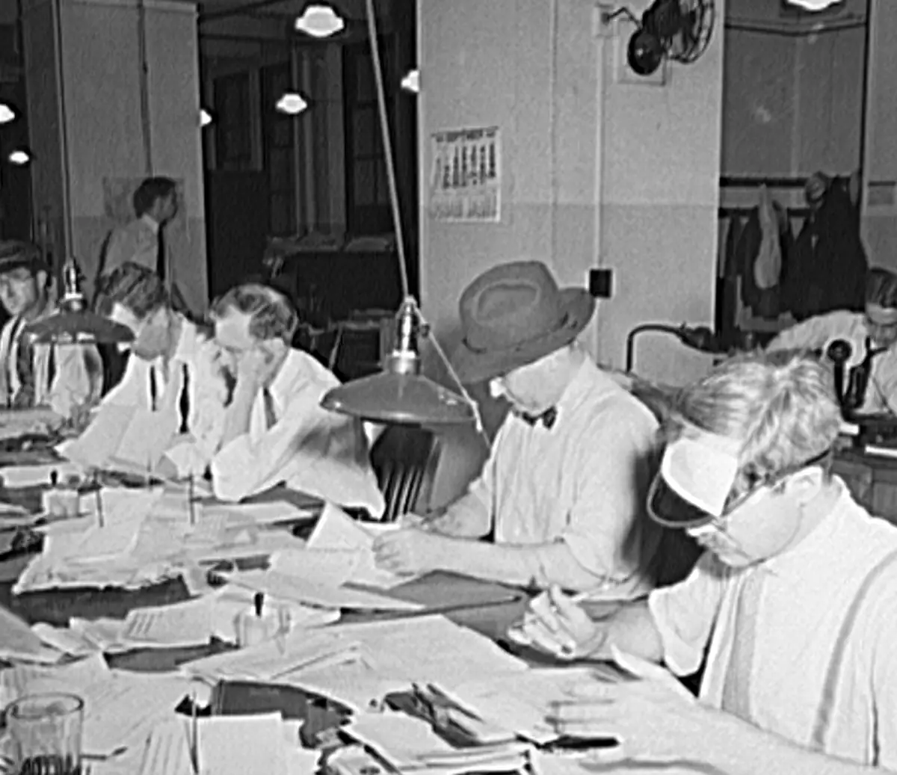

Draft six. Finally a title.
I named a file final_FINAL_v3 and lost a semester

Great detail. Keep.
My capstone lived in a folder with eleven versions of the same page.
There was index_final.html, index_final2.html, and the one I was sure about, index_FINAL_v3.html. The week before it was due, I opened the wrong one and spent two days fixing a bug I had already fixed in October.
Nothing had been deleted. That was the problem. Every copy looked like the real one, and none of them could tell me what had changed or why.
This part made me laugh. Don't cut it.
How it got this bad
It started with one reasonable decision. In September I was about to rewrite my navigation and I did not trust myself, so I copied the file first and added _old to the name. The rewrite went badly, I went back to the copy, and I felt clever.
So I did it again. By midterms I had a system, which is a generous word for it. Anything I was scared to touch got copied. Anything I liked got renamed FINAL. When FINAL stopped being true, I added a number.
| File | What I thought it was | What it was |
|---|---|---|
| index_old.html | The safe copy | Missing the new menu |
| index_final.html | The finished page | Not finished |
| index_final2.html | The finished page, really | Had the bug |
| index_FINAL_v3.html | The one | The wrong one |
Even the classics had a bad first try.

I keep this page taped above my desk. Count the crossed-out lines, then tell me your draft is bad.
Now we're getting somewhere.
The week it fell apart
Six days before the deadline, my professor asked to see the page with the new footer. I opened index_FINAL_v3.html. The footer was gone, and so was a fix I remembered making to the phone layout.
I spent that night opening files side by side and reading them line by line, trying to work out which one was newest. The dates were useless, because I had opened and saved all of them while looking. At 2 a.m. I found the footer in index_final2.html, right next to the bug I had spent two days fixing.
What changed
My editor suggested version control, which I had assumed was for software people. It turned out to be a better way of doing what I was already trying to do: keep a safe copy before taking a risk.
The difference is that the history lives beside the work instead of inside the file name. There is one index.html. Every saved version has a date, my name, and a sentence about what I changed.
Print this part big.
What I do now
- Keep one copy of the project and let Git remember the rest.
- Save a version after each finished task, not at midnight.
- Write down why I changed something, in a sentence my future self can read.
My folder has four files in it now. The whole history is still there, one command away.
Priya Nair is a senior studying media strategy. This essay went through six drafts. Her editor says five of them were necessary.